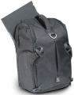

3N1系列大容量摄影包的背面设计了可以放置手提电脑的隔层。摄影包侧面设计了背带卡口，可以采用双肩或斜挎等多种携带方式。
设计很新颖，但是不是很专业的摄影包，上下隔层结构有利有弊
单肩背的时候取放器材很方便 一两个机身，不带长焦头的话装下层没问题 上层可放不少附件 夹层可放15寸笔记本
底部保护非常薄弱 几乎没有背负调节可言，器材重的话改成双肩背会比山寨双肩包还难受 上下隔层可以连通，可是根本没意义，那样器材会处于完全没有保护的状态 下层最多装一套67，如果135顶级机带个长焦头就很难装进去 难道要放上层？ 侧兜容量太小 后面外挂三脚架只能挂超小型的，稍微长一点的三脚架或独脚架很难装的
很喜欢的包包，容纳能力惊人，做工也是很好，很满意。
价格有点小贵，不过物有所值
暂无